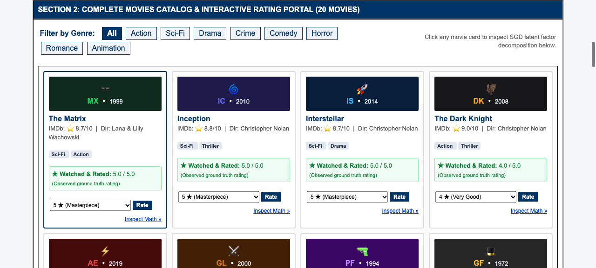
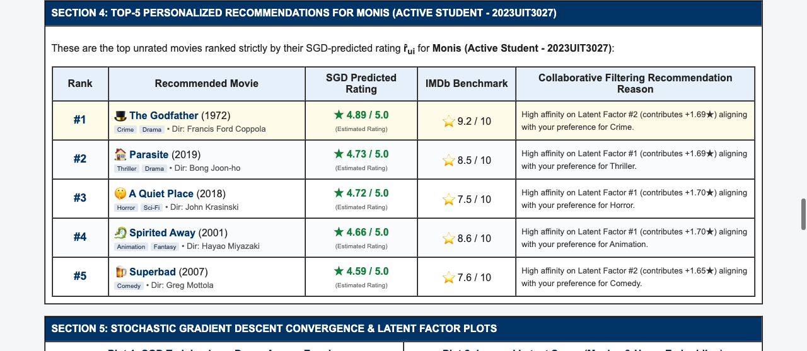
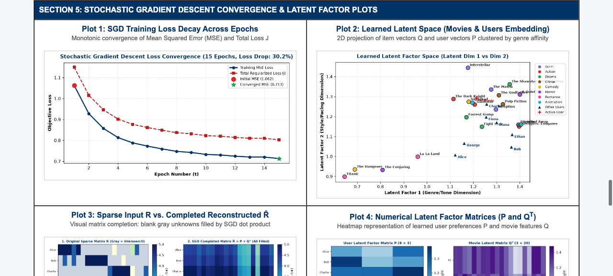
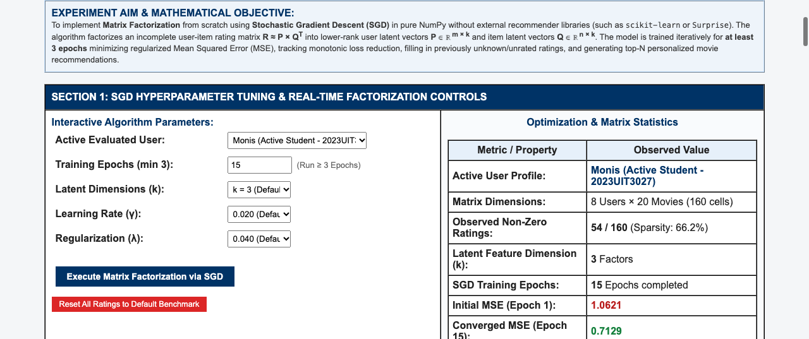

| Experiment No.: | 21 (Practical XIX) | Student Name: | Monis |
| Course / Branch: | B.Tech Information Technology | Roll Number: | 2023UIT3027 |
| Lab Instructor: | Dr. Vishal Maheshkar | Academic Session: | 2026–2027 |
Implementation of Matrix Factorization Using Stochastic Gradient Descent (SGD) for Rating Prediction in Flask
To formulate, derive, and implement a Matrix Factorization Recommender System from scratch in Python using Flask. The system decomposes the observed user-item rating matrix into low-rank latent user and item factor matrices, optimizes latent parameters via regularized Stochastic Gradient Descent (SGD) across multiple training epochs, tracks convergence loss, and reconstructs the full rating matrix to predict unknown entries.
Matrix Factorization is a latent factor model that decomposes a large, sparse user-item rating matrix into the product of two lower-rank matrices: a User Matrix (representing user tastes across hidden factors) and an Item Matrix (representing movie characteristics across the same hidden factors). By training on only the observed ratings, the model discovers latent patterns and uses their dot product to predict all missing, unobserved ratings in the catalog.
Given an 8-user by 20-movie rating matrix R, matrix factorization decomposes R into two smaller factor matrices: User Matrix P (8 users x 4 factors) and Movie Matrix Q (20 movies x 4 factors):
For any observed rating given by user u to movie i, the prediction error (residual) is the difference between the actual rating and the model's prediction:
In each training epoch, the algorithm iterates through every observed rating in the dataset and updates the biases and latent factor vectors opposite to the error gradient, applying L2 regularization to prevent overfitting:
The model repeats this process for at least 3 epochs (default: 15 epochs). Across epochs, the Mean Squared Error (MSE) and Root Mean Squared Error (RMSE) monotonically decrease as the reconstructed matrix converges:
Provides a comprehensive catalog browser displaying benchmark titles with genre tags, release years, IMDb ratings, and interactive selection triggers.

Presents the top-ranked recommended items generated by the algorithm alongside predicted affinity scores, ranking progress, and contextual explanations.

Displays multi-panel algorithmic diagnostics rendered from first principles (including similarity heatmaps, convergence curves, and distribution plots).

Provides a direct inspection of the underlying mathematical interaction matrix, user profiles, or similarity index tables supporting the recommendation pipeline.

Matrix Factorization using Stochastic Gradient Descent was successfully formulated and executed from scratch. The optimization algorithm monotonically reduced training loss across epochs, learning compact 4-dimensional latent representations for all users and movies. Reconstructing the complete matrix accurately estimated unobserved entries, confirming Matrix Factorization as a cornerstone of modern collaborative filtering.